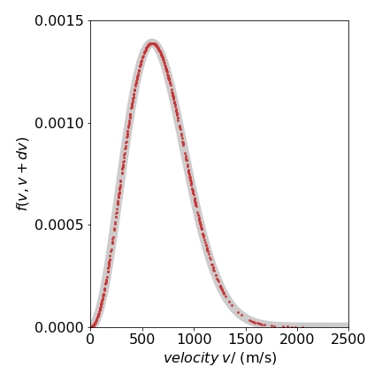
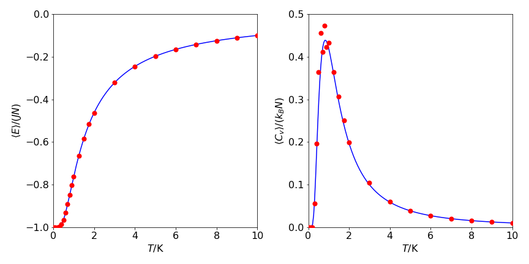
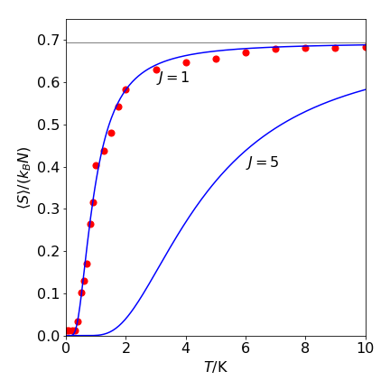

The Metropolis algorithm¶
%matplotlib inline
import matplotlib.pyplot as plt
import numpy as np
from sympy import *
init_printing() # allows printing of SymPy results in typeset maths format
plt.rcParams.update({'font.size': 16}) # set font size for plots
Introduction to the Metropolis algorithm¶
This is a extremely important algorithm because it speeds up many calculations bringing them into the realm of possibilities. The algorithm calculates average properties by using Monte-Carlo methods to preferentially sample important contributions to the result and thus does not waste time on unimportant ones. In illustrating this algorithm examples from statistical thermodynamics and quantum mechanics are used.
In statistical mechanics, if the partition function or ‘sum over states’ \(Z\) is calculated, all other thermodynamic properties such as internal energy, entropy or heat capacity, can be evaluated. For example, the internal energy \(U\) at constant volume is
where \(U_0\) is the internal energy at \(T=0\). As a result, a great deal of attention is paid in textbooks to evaluating \(Z\) for different problems, such as the harmonic oscillator or rigid rotor. If a thermodynamic ‘system’ is in contact with a heat bath, then the canonical (ensemble) partition function \(Z\) (at constant \(N,\; V,\; T\)) is defined as the ‘sum over states’ hence
where the energy of level or state \(n\) is \(E_n,\; k_B\) is Boltzmann’s constant, and \(T\) the temperature. The degeneracy of level \(n\) is \(g_n\).
The heat capacity \(C_V\) be calculated by differentiating \(U\); then using \(S =\int C_V/TdT\) the entropy is obtained as
There is, however, another way of calculating internal energy and heat capacity, and this is via the relationships \(\langle E\rangle \equiv U - U_0\), giving
where \(\langle E \rangle\) is the average energy and \(\langle E^2 \rangle\) is the average of the square of the energy. If the partition function can be calculated, then these averages are not needed. In many cases, however, there are obstacles to calculating the partition function and then the Metropolis algorithm can be used.
The harmonic oscillator’s energies are \(E_n = h\nu(n + 1/2)\), the quantum numbers \(n = 1, \;2, \;3,\cdots\), and levels are singly degenerate; \(g_n = 1\). The summation forming the partition function can be evaluated algebraically, but even if no algebraic solution was forthcoming, such as is the case for the anharmonic oscillator, \(Z\) could be evaluated numerically because with increasing energy the exponential terms very rapidly become insignificant and contribute negligibly to the total sum. In practice, the summation has a limited, rather than infinite, number of terms. The small value of terms when the energy is large can be appreciated by comparing the \(n = 0\) term with that when \(n = 15\) where clearly \(\displaystyle e^{-h\nu/2k_BT} \gg e^{-31h\nu/2k_BT}\); the ratio of the two terms is \(\approx 1330\). This ratio increases dramatically as \(\nu\) increases or \(T\) decreases.
Now consider a more involved case of calculating the partition function for rotation around bonds in a protein. The purpose of this would be to estimate the lowest energy configuration and so the folded structure of the protein from its amino acid sequence\(^*\). Suppose that there are 100 amino acids in the protein and the interaction energy between adjacent amino acids, caused by bond rotations, can take only three values, then there are \(3^{100} \approx 5 \cdot 10^{47}\) configurations to calculate! Unlike the harmonic oscillator, there are now only three energies to consider, and these are similar in value. However, there are so many combinations of these that the partition function cannot be estimated by summation because the summation does not tend to a limit as more terms are added. This is quite unlike the harmonic oscillator, where terms become progressively and rapidly smaller as more are added. The number of configurations, \(5 \cdot 10^{47}\), may not seem so large; large numbers can easily be imagined, Avogadro’s number for instance, or even larger a googol \(10^{100}\) or a googolplex \(\displaystyle 10^{10^{100}}\), for example. To put our number into context, there have only been \(\approx 4 \cdot 10^{17}\) s since the universe was created, and even if it were possible with a supercomputer to calculate \(10^{15}\) configurations each second, this single calculation would still take longer than the age of the universe to complete. Quite a challenge!
\(^*\)( The problem is more complicated than this because folding is cooperative, but we shall suppose that we do not know this. The allowed and forbidden angles, which are those with large steric repulsion, produce the Ramachandran plot, which shows how much \(\alpha\)-helix, \(\beta\)-sheet, and random coil a protein contains. See Chapter 6.20 for a description of how to calculate this from the X-ray structure.)
A second example is the Ising spin model problem studied by physicists. In this, a two- or three-dimensional grid of paramagnetic transition metal atoms is imagined either with or without an external magnetic field. The unpaired electrons have a spin that is either ‘up’ or ‘down’. The problem is to find the minimum energy, magnetization, or spin heat capacity when the spins interact with one another and with an external magnetic field. If the grid of atoms is small, such as \(10 \times 10\), as each atom can have only one of two spin states, there are \(2^{100}\) or \(\approx 10^{30}\) configurations to search to find the minimum energy; again a computational disaster. Two quantum states are present for each spin, which are similar in energy. The total energy for any configuration is the sum of all these individual but similar terms. Again, the partition function summation does not obviously tend to a limit as it does in the harmonic oscillator case, and hence, all configurations have to be evaluated. Two configurations of the \(2^{256}\approx 10^{77}\) possible ones in a \(16 \times 16\) lattice of spins, are shown in Figure 20.
The Metropolis algorithm is a Monte Carlo method that allows various average properties to be calculated, such as energy and magnetization, by sampling mainly those configurations that are important contributors to the average value; see Metropolis et al. (1953), Frenkel & Smit (1996), Newman & Barkema (1999) and Krauth (2006). The algorithm is general and can be used to perform ray-tracing in computer graphics and to work out the ‘travelling salesman’ problem, which is to find the shortest route when visiting several cities. The biasing in this case is based on how far the next city is from the one you are presently at, and so gives a very low weighting to routes that zigzag the country compared to those that visit neighbours.
Suppose, that instead of calculating the partition function, the energy or some other quantity could be calculated directly. If this quantity is called \(Q\), the equation to evaluate the average is the same as has been met before (Chapter 4.8.2) and is
where \(P(x)\) is a probability distribution and in the Metropolis algorithm the Boltzmann distribution is used which means that sampling is energy biased. If energy levels are discrete, the integral can be replaced with a summation. Alternatively, if only finite changes to a parameter are possible, a spin changing from \(-1/2\) to \(1/2\) for example, then the integral can also be replaced with a sum. The average, or expectation value of \(Q\) becomes
where \(Z\) is the partition function.
Basis of the Algorithm¶
The Metropolis algorithm allows an estimation of the ratio of the two sums to be made in an efficient way. This avoids having to calculate \(Z\), which, as we have seen, may be impossible. The algorithm overcomes the necessity to search all the ‘phase space’, as configurations are generically called, and biases the random guessing of which configuration to add to the total, by using the Boltzmann distribution of energies. In doing this, the algorithm tries to add to the estimate of \(Q\) only those configurations contributing significantly to its value and, in doing so, performs a random walk among the configurations; see Figure 12 for a picture of two configurations. This random walk is also called a Markov process. This is defined as a process whereby a ‘system’ goes from one state to another in a random fashion, but has no memory of its previous condition.
To sample points in configuration space, according to the Boltzmann distribution, it is sufficient, but not necessary, to impose ‘detailed balance’ between any two configurations. This means that if \(w_{12}\) is the rate to go from configuration (or state) 1 with energy \(E_1\), to a new state 2 with energy \(E_2\), then the reverse transition \(w_{21}\) is related by
or more familiarly
The ratio of rates is the same as the ratio of probabilities of going between two configurations. The detailed balance condition ensures that any one configuration can be reached from another in a finite number of steps, and this condition is called ergodicity. This condition means that no configurations are systematically missed. Furthermore, if a sufficient number of samples are used in the calculation, all configurations will be sampled in proportion to their importance in contributing to \(\langle Q \rangle\). The algorithm can also be viewed as a random walk among the many configurations, preferentially adding in those that contribute most to the average. The result is that states are produced in proportion to their Boltzmann distribution just as the states in reality are supposed to do.
All the basics of the algorithm are now assembled. The Metropolis idea is to compare two energies \(E_1\) and \(E_2\) from two guessed configurations 1 and 2. If the new one, 2, has the lower energy, then this configuration is accepted. If not, the chance of the new one, 2, contributing to \(\langle Q \rangle\) is guessed by comparing \(e^{-(E_2-E_1)/k_BT }\) to a uniform random number from zero to one and accepting configuration 2 if the random number is smaller; otherwise, the old configuration 1 is accepted, and so on.
To illustrate using equation 13a, in the next few examples it is calculated exactly and then by the Metropolis method. Consider calculating the average kinetic energy of a molecule of mass \(m\) moving in one dimension, but doing so in contact with a heat bath at temperature \(T\) so that it undergoes random thermal motion. If \(v\) is the velocity at any instant, the average kinetic energy \(\langle E\rangle_k\) is found with \(Q(v) = mv^2/2\), and the ratio of integrals is (see also eqn 13 a)
As \(\langle E^2\rangle = 3(k_BT/2)^2\), the heat capacity is \(C_V = k_B/2\). It should be noted here that in the integration 13b the energy must always be specified in terms of its parameters. In this example, this means changing \(dv\) to \(dE\) via \(dv = dE/(2mE)^{1/2}\). Only then will integrating over \(E\) return the correct result.
Consider next either the classical harmonic oscillator or the quantum harmonic oscillator at high temperature. There is a kinetic energy contribution to the total energy because the atoms are moving relative to one another about their equilibrium position with velocity \(v\). Equation 13b again gives the average kinetic energy. Additionally, there is the potential energy \(Q(x) = E_p = kx^2/2\), where \(x\) is the displacement from the equilibrium position. Mathematically this is the same calculation as eqn. 13b and produces the same result, but \(x\) is used instead of \(v\) and \(k\) instead of mass \(m\). The total average energy is therefore \(k_BT\). This result is a consequence of the equipartition theorem of classical mechanics where each quadratic term in the energy representing either the momentum \(p_x\) (kinetic energy \(E = p^2_x/(2m))\) or position \(x\), contributes \(k_BT/2\) to the total energy.
Just as in an experiment where repeated measurements improve the precision, in a Monte Carlo calculation increasing the number of trials acts similarly. Experimental measurements on individual molecules produce results that can be different from those on an ensemble of a large number because rare events can be observed. In an ensemble measurement, the fluctuations experienced by any individual molecule are always averaged out. These fluctuations are a result of numerous interactions with the ‘thermal bath’. To illustrate the difference between a single versus many measurements, the standard deviation \(\sigma\) of the average energy \(\langle E\rangle\) can be used. This is defined as
and the fractional error is, using the equation for \(C_V\),
For a single particle, \(C_V = k_B/2\) and \(\langle E\rangle = k_BT/2\), making \(\sigma/\langle E\rangle = 1\). Thus, the average energy obtained from a measurement on a single particle has, not surprisingly, a very large standard deviation. When \(N\) particles are measured (or \(N\) repeated measurements of the same one), then \(C_V = Nk_B/2, \;\langle E\rangle = Nk_BT/2\) and now \(\sigma/\langle E\rangle \approx 1/\sqrt{N}\) which is a vanishingly small quantity if \(N\) is large, and a good estimate of the true \(\langle E\rangle\) is obtained. Similarly, with a Monte Carlo simulation, the more samples that are included, the more accurate the result becomes and the standard deviation improves in proportion to \(1/\sqrt{N}\).
To calculate an average quantity \(\langle Q \rangle\) the steps are:
(1) Initialize parameters
\(\quad\)(i)\(\quad\) Calculate \(E_1\) for any first configuration or state you choose.
\(\quad\)(ii)\(\quad\) Calculate the initial value \(Q_1\).
(2) Start a loop
\(\quad\)(i)\(\quad\) Calculate \(E_2\) for another state chosen at random.
\(\quad\)(ii)\(\quad\) If \(E_2 \lt E_1\), keep the new state and add \(Q_2\) to a total quantity \(Q_{tot}\).
\(\quad\)(iii)\(\quad\) If \(E_2 \gt E_1\), then calculate \(e^{-(E_2-E_1)/k_BT}\):
\(\quad\)(iv)\(\quad\) If \(e^{-(E_2-E_1)/k_BT} \gt r\), where \(r\) is a uniform random number between 0 and 1, keep the new state and add \(Q_2\) to \(Q_{tot}\).
\(\quad\)(v)\(\quad\) If \(e^{-(E_2-E_1)/k_BT} \lt r\), retain the old state and add \(Q_1\) to \(Q_{tot}\).
(3) Continue the loop until \(Q_{tot}\) is obtained to a sufficient accuracy, or a fixed number of trials has been done.
(v) Average\(\langle Q \rangle= Q_{tot}/N\) for \(N\) calculations.
Notice that even if a new state is not accepted the last used value \(Q_1\) is still added to the total, because each (randomly chosen) configuration has to be added into the total.
As a particular example, the mean potential energy of a harmonic oscillator will be calculated; the quantity \(Q\) is the energy and can be calculated exactly and is \(k_BT/2\). The mean square energy will also be found which can also be calculated exactly, and is \(3(k_BT)^2/4\). The standard deviation of the energy is
6.1 Average energy, heat capacity and displacement of a harmonic oscillator¶
In the next example, the harmonic oscillator, \(k=2\) and \(k_BT = 0.1\). Random guesses of the values of \(x\), (the configuration or state) are made, and the average energy calculated. The range of \(x\) must be large enough to allow \(e^{-E/k_BT}\) to be very small, \(\approx10^{-7}\) or less, to allow proper sampling of the distribution. In addition, the range of \(x\) must be positive as well as negative. The random number has 1/2 subtracted from it to ensure this. If this is not done, then microscopic reversibility is not achieved because not all the possible configurations, in this case bond extension, can be sampled. The calculation continues for \(20000\) samples.
# Algorithm: Metropolis Harmonic oscillator
# np.random.ranf() calculates one random number in the range 0 - 1
n = 20000 # number of samples
deltax= 0.4 # max displacement
kB = 1.38e-5 # in kg/nm^2/s^2/K == 1.38e^(-23) J/k
nm = 1e-9
T = 300.0
kBT = kB*T
Etot = 0.0 # initial <E>
E2tot = 0.0
k = 10.0 # force constant
V = lambda x: 0.5*k*x**2 # potential energy PE
x1= 0.0 # first guess of x
E1= V(x1) # first guess of PE
for i in range(n): # start loop step(2)
x2 = x1 + (np.random.ranf()-0.5)*deltax #new x position
E2 = V(x2) # new PE
DeltaE = E2 - E1 # energy difference
# next line is Metropolis parts(2) in algorithm
if DeltaE <= 0.0 or np.exp(-DeltaE/kBT) > np.random.ranf() :
x1= x2 # save new configuration
E1= E2 # save new energy
pass
Etot = Etot + E1 # always add to total
E2tot= E2tot + E1**2 # add to total <E^2>
pass
Eav = nm**2*Etot/n; # average step (5) & put back into real units
E2av= nm**4*E2tot/n;
CV= (E2av-Eav**2)/(kB*T**2)/nm**2
print('{:s} {:8.4g} {:s} {:8.4g} {:s} {:8.4g}'.format('av E=',Eav, 'av e^2=',E2av,'Cv=',CV) )
av E= 2.121e-21 av e^2= 1.344e-41 Cv= 7.196e-24
Although we have calculated the average energy, the average displacement and its square are just as easily calculated. This is done by adding the lines \(\mathtt{ xtot=xtot+x1}\) and \(\mathtt{x2tot=x2tot+x1^{**}2}\) after the lines calculating the energy, and by defining these values to be zero initially. The calculated values are shown in the table and are are close to the theoretical values. In the algorithm, and only for clarity, adding \(\mathtt{E1}\) or \(\mathtt{x1}\) etc to their respective totals starts immediately, without allowing the random walk to come close to its equilibrium value, which takes several hundred steps. This introduces an error but as the number of Monte-Carlo steps is large, \(20000\), this error is small.
Estimations of the range of the average potential energy of a harmonic oscillator using the Metropolis method are shown in figure 18. The number of samples is the same in each case. For example, one run of \(10^5\) samples or 1000 runs of 100 samples. It is clear that sampling with a longer random walk reduces the standard deviation.
Figure 18. Metropolis estimation of potential energy vs. number of samples. The estimated energy is plotted as red circles. The horizontal line is the theoretical energy \(k_BT/2\) at 300 K. The solid lines are given by \(\langle E\rangle \pm a /\sqrt{ N}\) where \(a=2.5\) is a constant.
The harmonic oscillator clearly also has kinetic energy. The calculation to estimate this is essentially the same as just described; however, the constants are interpreted in a different way. The constant \(k\) now represents the reduced mass, which is will become \(10\) amu, and displacement \(x\) now represents the velocity \(v\) in m s-1 about the origin of coordinates taken as the center of gravity of the molecule. The velocity must range from at least \(\pm 4000\, \mathrm{ m\, s^{-1}}\) if the exponential \(e^{-\Delta E/(k_BT)}\) is to be \(\approx 10^{-8}\) or less at the largest speed. A typical value of the average kinetic energy (per molecule) is found to be \(2.03 \pm 0.01 \cdot 10^{-21}\) J, which is effectively the same result as for the previous Monte Carlo calculation of \(\langle E \rangle\) and demonstrates the equipartition theorem.
Maxwell distribution¶
Normally kinetic energy \(mv^2/2\) is interpreted as that due to molecules of a gas colliding with one another rather than that of the atoms of a harmonic oscillator. If this is the case then the Maxwell speed distribution can be constructed. To do this, the velocities that are accepted in the Metropolis step are stored as the calculation proceeds. Velocity is a vector but speed is not; consequently, the angles that a molecule has with respect to any axes are integrated away on calculating the speed distribution and no longer enter into the calculation. The result is that the speed distribution depends only on \(v^2\), which is interpreted as a scalar equal to the speed squared. For example, the probability per unit speed of molecules with speed \(s = |v|\) is,
It can be verified that \(\displaystyle \int_0^\infty f(s) ds = 1\). If the values of \(v\) calculated from the Monte Carlo method are put into equation 13b, they are distributed toward smaller values of \(v\), which shows the weighting that the method produces. However, if the Metropolis probability test is changed to \(\displaystyle (s_2^2/s_1^2)e^{-\Delta E/(k_BT)}\) from \(e^{-\Delta E/(k_BT)}\), then the results are distributed more evenly according to the Maxwell distribution. The changes to the code are shown below.
# Algorithm: Metropolis. Calculate Maxwell speed distribution.
# mass in amu, kB in J/K, x = speed in m/s
N = 1000 # number of samples
deltax= 5000.0 # max speed m /s
kB = 1.381e-23 # Boltzmann?s const J/K
T = 300.0 # temperature K
kBT = kB*T
amu = 1.6604e-27 # atomic mass unit kg
m = 14.0*amu # N2 mass in kg
Etot = 0.0 # initial energy <E> J
E2tot= 0.0 # initial <E2>
Xtot = 0.0 # initial value of total x
X2tot= 0.0 # initial value of total x2
V = lambda x: 0.5*m*x**2 # kinetic energy function of x
x1 = 1e-3 # first guess of x
E1 = V(x1) # first guess of PE
jj = 0 # initial index Ps & Px
Pi = np.pi
g = 4*Pi*(m/(2.0*Pi*kBT))**(3.0/2.0) # weighting for fs.
fs = np.zeros(N,dtype=float) # Maxwell probability f(s)
fx = np.zeros(N,dtype=float) # x value
for i in range(N): # start loop step (2)
x2 = x1 + (np.random.ranf() - 0.5)*deltax # new x position
E2 = V(x2) # new PE
DeltaE = E2 - E1 # energy difference
# next line is Metropolis sampling
if (DeltaE <= 0.0) or ((x2/x1)**2*np.exp(-DeltaE/kBT) > np.random.ranf()) :
x1 = x2 # save new config'n
E1 = E2 # save new energy
fs[jj] = g*np.exp(-E1/kBT)*x1**2 # Maxwell probability
fx[jj] = np.abs(x1) # make abs as only positive has any meaning physically
jj = jj + 1
pass
Etot = Etot + E1 # always add to total
E2tot = E2tot + E1**2 # add to total <E2>
Xtot = Xtot + x1 # add to total <X>
X2tot = X2tot + x1**2 # add to total <X2>
pass # end loop
Eav = Etot/N # average step (5)
E2av = E2tot/N
Estdev = np.sqrt((E2av - Eav**2)/(N-1))
CV = (E2av - Eav**2)/(kB*T**2)
# plot data
#plt.scatter(fx[0:jj],fs[0:jj],color='red',s=3)
#plt.show()
The results are shown in figure 19, where the Metropolis data from \(1000\) samples is shown as red dots on top of the known distribution eqn 13c (wide grey line) using a mass of \(14\) amu at \(300\) K. It is clear that the simulation matches the data remarkably well.

Figure 19. Maxwell speed distribution showing the distribution of sampled points. The thick grey curve is the theoretical line.
6.2 Ising spin model¶
The next example is taken from statistical mechanics and is the Ising model of a ferromagnet. In a ferromagnet, the atomic spins are coupled to one another by the quantum mechanical exchange interaction \(J\) and can only have two energies corresponding to being ‘up’ or ‘down’. The coupling ensures that ‘up’ spins want to be next to other up spins and ‘down’ spins want to be next to other down spins. At zero temperature, the minimum energy configuration occurs when all the spins align in the same direction, and its energy is \(-2JN\) for \(N\) spins. The entropy of the spin system is zero, because all spins are aligned in perfect order, and so is the heat capacity \(C_p\). The magnetization, which is the sum of the individual spin magnetic moments, is maximal.
As the temperature rises, the energy absorbed induces thermal motion in the atoms. This disrupts the alignment of the spins and they start to flip over. The heat capacity, which is defined as the rate of change of the internal energy with temperature, increases as more spins gain energy and are flipped. However, destroying the spins’ alignment causes the magnetization to fall. At high temperatures, the spins are randomly aligned and because of this the total magnetization approaches zero. The heat capacity also falls, reaching zero at infinite temperature. This happens because the spins only have two energies corresponding to being up or down relative to a neighbour, and cannot absorb any more energy than when they are randomly aligned, which corresponds to infinite temperature. Between these two extremes, in a two dimensional arrangement of spins a surprising phase transition occurs where the heat capacity becomes infinite as the magnetization drops towards zero. The phase transition is observed if a two-dimensional plot is made of the spin state. Just past the transition, large areas of similar spin alignment dissolve and the spins on the lattice become considerably more disordered; Fig. 20.
The phase transition can be understood in thermodynamic terms, by considering the free energy change \(\Delta G = \Delta H - T\Delta S\). As only spins are considered there is no \(pV\) work; we are not considering a gas, therefore \(\Delta H = \Delta U\), where \(U\) is the internal energy. This is determined by the exchange interaction energy \(J\). At the temperature of the phase transition, the phases are at equilibrium and \(\Delta U = T\Delta S\). At lower temperatures, the entropic term must be relatively small because T is small, and \(\Delta S\) is also small because the spins are more ordered. The free energy \(\Delta G\) is therefore overwhelmingly determined by the internal energy. As the temperature increases, the increasing entropic term will make \(\Delta G\) more negative. Additionally, as the entropy also increases with temperature, the change from internal energy to entropy determining the free energy is sudden in the sense that it occurs over a small temperature range. The heat capacity becomes infinite at the phase transition because the heat supplied does not go into raising the temperature, but in reorganizing the spin states, and that causes an increase in entropy.
Figure 20. Two examples of \(2^{256}\) or \(\approx 10^{77}\) possible configurations of spins in a \(16 \times 16\) Ising model with temperature \(T = 2\) (left) and \(3\) (right) showing how significantly the disorder increases after the phase transition at \(T = 2.269\). The light squares represent spin = \(1\), and the dark squares, spin = \(-1\). The exchange coupling \(J = 1\), and \(k_B = 1\).
1D spin model¶
In the examples such as the Maxwell distribution there is no interaction between particles. One of the simplest examples in which interaction is allowed is the one-dimensional (1-D) Ising spin model. This is realized in practice with some Fe(II)Cl\(^-_3\) compounds which, in the crystalline state, have chains of Fe\(^{2+}\) atoms held apart with dichloride bridges. Part of the crystal structure of trimethylammonium iron(II) trichloride hydrate, (FeTAC), \(\mathrm{[(CH_3)_3NH]FeCl^-_3 \cdot 2H_2O}\), is shown in Figure 20. The coupling between different chains of molecules in the crystal is relatively weak, but the interaction along a chain is so strong that this compound behaves as a 1-D chain of interacting electron spins.
A spin may flip because of its interaction with surrounding atoms and consequently neighboring spins are affected. These spins in turn affect their neighbors, and thus, one flip may propagate along the chain until all spins come to equilibrium with their surroundings. The electrons interact with one another by the exchange interaction of magnitude \(J\). The number of electrons in each spin state, either ‘up’ or ‘down’, depends on the ratio of this interaction to the temperature. A small section of the spin state is shown in Figure 20. Parallel spin pairs have energy \(-J\) but \(+J\) if they are anti-parallel. If \(J\) is positive, the spin system is ferromagnetic and if negative, anti-ferromagnetic.
The energy of a chain in the absence of an external magnetic field is given by
where \(s_k =\pm 1\) represents the spin on the \(k^{th}\) site, and the sum is taken over all pairs \(s_ks_{k+1}\). The various combinations the spins take produce the different energies \(E_\alpha\). Because the exchange interaction depends on the overlap of wavefunctions, as does the related Coulomb interaction, it is of very short-range; therefore, only the nearest neighbors are important, and the summation of eqn. 13d is pairwise.
Figure 21. (A) Schematic of part of the FeTAC crystal structure, based on Greeney et al. (Phys.Rev. B 1989, 39, p 12200). The Fe atoms (center) are linked by two chlorines (gray), and the oxygen atoms (black) complete the coordination. In this compound, \(J/k_B = 8.85\) K. (B) Representation of electron spins as either ‘up’ or ‘down’.
Because the spins interact with one another, at very low temperature they will all align in one direction with a total energy of \(-NJ\) (assuming \(J \gt 0\)) as there is not enough thermal energy to disrupt spin alignment. As the temperature increases, spins will flip over. Eventually, at infinite temperature, which in practice may be well below room temperature, the energy approaches zero because there are as many parallel as anti-parallel spin pairs. The spin heat capacity at low temperatures is also close to zero, because there is not enough energy to flip a spin, and therefore, the rate of change of energy with temperature is zero; \(\lim_{T\to 0} C_V(T) = \lim_{T\to 0} \left( \partial U/\partial T\right)_V = 0\). At infinite temperature, the heat capacity again approaches zero. Because there are now equal populations of parallel and anti-parallel spin pairs, no more energy can be absorbed, and thus, the rate of change of energy with temperature is zero. As \(C_V\) is zero at both extremes of temperature and is, by definition, a positive quantity, it must pass through a maximum at some finite temperature whose value will depend on \(J\).
The entropy of the chain of \(N\) spins is \(k_B\ln(2)\) at zero temperature, because two degenerate and ordered spin states exist. At high temperatures, where the thermal energy is far greater than the spin interaction energy, the entropy is \(Nk_B\ln(2)\). This is \(N\) times greater than at 0 K and a dependence on \(N\) is to be expected because entropy is an extensive quantity. The entropy therefore initially increases with an increase in temperature and then becomes constant. The magnetization and susceptibility can also be simulated. Details of these calculations are given below.
Without having to evaluate the partition function directly, the energy, heat capacity, and entropy can be calculated using the Metropolis algorithm. In the calculation shown in Figure 2, a chain of \(500\) spins is simulated and the number of spin states is therefore \(2^{500} \approx 3 \cdot 10^{150}\), all of which would have to be evaluated in a direct calculation. The results of the Monte Carlo calculation, Figure 23, have been obtained by randomly sampling each site \(4000\) times. Although this represents a large number of calculations, it is only a minuscule fraction of the total number of possible spin states and demonstrates the power of this algorithm.
It is clear that the Metropolis algorithm accurately simulates the change in energy and heat capacity with temperature. In implementing this particular Monte Carlo calculation, there are three considerations. The first is to calculate the energy change caused by flipping one spin, the second is to decide what happens at the ends of the chain, and the third is to determine what values the spins should have at the start of the calculation. First, to determine the energy change, a site is chosen at random and its spin flipped. The change in energy this causes is found by looking at the site and its two neighbors and calculating what happens; Figure 23 shows two examples. The change in energy \(\Delta E = E_2-E_1\) is either zero or \(\pm 4J\), and because a negative or zero change in energy is always accepted, the exponential expression in the Metropolis sampling step is always \(\displaystyle e^{-4J/(k_BT)}\). This can be calculated outside the Monte Carlo loop, which saves considerable time.
The second consideration concerns the finite length of the chain. Theoretically, infinite length is assumed, but obviously this must be finite and thus a boundary condition is necessary to simulate infinity. The boundary condition used effectively makes the chain circular, so that if a spin’s nearest neighbor is one step off the end of the chain, the state of the spin at the other end is used. Therefore, if the \(N\) indices run from \(0 \to N-1\), then index \(\gt N-1 \to 0\) and index \(\lt 0 \to N-1\). The last consideration concerns the initial arrangement of the spins. Are these to be aligned, to be random, or somewhere in between? Although it does not matter how the initial spins are arranged provided enough Monte Carlo runs are taken, at low temperatures fewer runs are needed if the spins are initially parallel.
Figure 22. A schematic of two configurations of spins related by a single spin flip. Only values of \(\Delta E = 0, \pm 4J\) occur. The interaction energy is \(-J\) between a pair of parallel spins whether up or down, and \(+J\) if anti-parallel. The energy change is calculated as final - initial state.
The code to calculate 1D Ising spin energy and heat capacity as in figure 23 is shown below. The parameters to be used are defined outside the routine Ising1D but can be used inside as in Python they are global variables.
# Algorithm: 1D Ising model
#--------------------------------------------
def Ising1D(beta):
#L # L sites
#N # calcs / site
#J # positive J is ferromagnet
#kB # Boltzmann const, in a.u.
#T # temperature
# beta = J/kBT
rndi = np.random.randint(L,size = N) # make list of random numbers 0 to n used as indices
spin= np.zeros(L,dtype=int)
# deltaE can take values ( -4, 0, 4), however, only the
# positive value is used in the metropolis test, hence we define
# probability P for the Metropolis test outside the loop.
P = np.exp(-4.0*beta) # probability in Metropolis test.
for i in range(L):
spin[i] = -1 # initial spin distribution
Enrg = -J*L # all spins aligned initially
tot_Enrg = 0.0
tot_Enrg2= 0.0
for num in range(N):
i = rndi[num]
indx1 = i + 1
if indx1 > L-1 : indx1 = 0 # wrap around ends
indx2 = i - 1
if indx2 < 0 : indx2 = L - 1
DeltaE = 2.0*J*spin[i]*(spin[indx1] + spin[indx2]) # energy of spin i + energy of adjacent spins
if DeltaE <= 0.0 or np.random.ranf() < P : # Metropolis test
spin[i] = -spin[i] # flip spin
Enrg = Enrg + DeltaE # add energy
pass
tot_Enrg = tot_Enrg + Enrg # total energies
tot_Enrg2= tot_Enrg2 + Enrg**2
pass
return tot_Enrg, tot_Enrg2
#---------------------------------------------
L = 500 # L sites
reps = 400 # repeats
N = L*reps # reps calcs / site
J = 1.0 # positive J is ferromagnet
kB = 1.0 # Boltzmann const, in a.u.
T = 2.0 # temperature
beta = J/(kB*T)
tot_E, tot_E2 = Ising1D(beta) # calculate
avE = (tot_E/N) # total N events
avE2 = (tot_E2/N)
Cv = (1.0/(L*kB*T**2))*( avE2 - avE**2 ) # <E^2> - <E>^2
print('{:s} {:f} {:s} {:f}'.format('av energy/site =',avE/L, 'Cv =',Cv) )
av energy/site = -0.468526 Cv = 0.270514

Figure 23. Left: The red circles are the Monte Carlo calculated energy, \(\langle E\rangle\), per spin; \(\langle E\rangle/JN\). Right The heat capacity per spin \(\langle C_V\rangle /k_B\) vs temperature (K), with \(J/k_B = 1\) K. One run of \(4000\) samples is shown for each point. The lines are from the analytical functions, see text.
Calculating the Entropy¶
Although the entropy at a given temperature \(T\) can be calculated by integrating \(C_V/T\), it can also be calculated more fundamentally from the arrangement of the spins. Maps of the spin state at the end of a calculation indicate how the entropy changes with temperature, and three examples are shown in Figure 24.
Informally, we may label a black group as ‘parallel spin up’ and a white one ‘parallel spin down’, although ‘up’ and ‘down’ should not be taken literally. Within any blocks of either color, the spins are parallel to one another; hence, the coupling is \(-J\) between adjacent spins. A color boundary thus indicates spin pairing and a coupling of \(+ J\) between these two spins; see Figure 22. At \(T = 0\) K, all spins are in the same state, which would mean that the whole strip would be of the same color. However, there are two ground states at \(T = 0\) and these could be colored either black or white. At low temperatures, for example, \(T\) = 1/2 or 1 K, (Figure 24) spins are grouped into a few large blocks of similar spin state. Although only one example is given in the figure, it is clear that if many calculations are performed here only a limited number of arrangements of these large blocks of spins will be possible. These configurations or arrangements determine the entropy. As the temperature is increased, the coupling between spins becomes relatively less important compared to the energy supplied by the surrounding heat bath. This reduces the size of the groups of similar spin state but increases their number, which leads to more of ways of arranging them, and hence, a larger entropy.
The entropy of the equilibrium state is given by \(S = k_B \ln(\Omega)\) where \(\Omega\) is the number of arrangements that the spins can take. To calculate \(\Omega\), the number of groups of spins p present at the end of the calculation and at a given temperature is counted; see Figure 24. This is done by searching the pattern of spins for the number of spin changes and adding one to the total. From the theory of statistics, the number of ways of choosing \(N_p\) distinguishable objects from a group of \(N\) distinguishable objects, where the order of choosing does not matter, is given by
This is the number of arrangements, or combinations and also the binomial coefficients. Equation 13e is a good approximation to the number of arrangements of groups of spins, when \(N\) is large and the temperature is not zero, thus \(\Omega \approx \Omega '\). The good agreement, Figure 23, between the equation describing the entropy per spin and that obtained from the spin state on using the Metropolis algorithm shows that this is a good approximation.
When \(T\to \infty\) , the number of spin arrangements must be greatest because the interaction between spins is unimportant compared to thermal energy. From eqn 13e, this occurs when \(N_p = N/2\), and provided \(N\) is large \(\Omega_{max}\to 2^N\). The maximum entropy is therefore \(S_{max} = Nk_B\ln(2)\) and the entropy per spin when \(T \to \infty\) is \( k_B \ln(2)\). This is the same result as obtained from theory. Because the entropy depends on \(N\), this result demonstrates that entropy is an extensive quantity. At \(T = 0\), all the couplings between spins will be the same (at \(-J\)) and one group of spins exists, and thus, a value of \(\Omega = 1\) might seem appropriate and this would make the entropy zero. However, because of the quantum properties of electron spin, two ground states exit and because both of these are populated at \(T = 0, \; \Omega = 2\) and the total entropy is \(k_B\ln(2)\). When \(N \to \infty\), the entropy per spin tends to zero, \(S_0 = k_B\ln(2)/ N \to 0\), in accordance with the third law of thermodynamics.
Within statistical variation, the entropy per spin obtained by counting groups of spins and using eq 13e and that calculated from theory are the same, see Figure 24.
Figure 24. Examples of spin states for \(500\) spins and \(2000\) samples/ spin and with \(J/k_B =1\) K at \(T=1/2\), top ,\(1\) K middle, and \(10\) K bottom. The pattern at \(T=1/2\) K contains \(15\) groups since the blue areas correspond to one spin state and white the other.
Finally, we note that \(S = k_B\ln(\Omega)\) is derived using a micro-canonical ensemble, (\(N,\; V,\; E\) constant), whereas the entropy calculated using the partition function is derived from a canonical ensemble (\(N, \;V, \;T\) constant). Energy fluctuations are permitted in the canonical ensemble but energy is fixed in the micro-canonical ensemble. This inherent difference does not contradict their equivalency, provided that the size of the fluctuations becomes vanishingly small in the canonical ensemble, which it does in the limit of large \(N\). The argument to demonstrate this follows along the lines of that above where the energy dispersion \(\sigma\) is now interpreted as the energy fluctuation of the canonical ensemble. The ratio of energy fluctuation to average energy \(\sigma/\langle E\rangle \approx 1/\sqrt{N}\), becomes vanishingly small as N increases.

Figure 25. The open circles show the Monte Carlo calculated spin entropy as \(\langle S\rangle/k_BN\) vs temperature with \(J/k_B = 1\) K using eqn. 13e. At each temperature and \(J\) value, \(N = 500\) and \(4000\) samples/spin were taken. The solid lines are calculated with the theoretical function,see text. The high temperature limit for both \(J\) values was calculated at \(T = 100\) and was effectively \(k_BN\ln(2)\). This limit is indicated by the horizontal grey line which has a value of \(\ln(2)\).
At the end of the calculation, the array \(\mathtt{spin}\) contains the final pattern of spins. The number of changes in adjacent spins can be calculated as shown here, and then equation 13e used to calculate the entropy / spin. However, this equation can involve some very big numbers that can easily exceed the maximum allowable. In which case the after some algebra the binomial coefficients should be calculated which avoids these large numbers. The \(\mathtt{BinCoeff()}\) procedure does this. It works because \(p!\) can always be divided into \(N!\). Figure 25 shows the results of the calculation.
#-------------
def BinCoeff(n, k):
r = 1
for i in range(1, k + 1):
r = r * (n - i + 1) / i
return r
#-------------
def get_entropy(spin):
p = 1 # start at 1 to get groups
for i in range(L - 1):
if spin[i+1] != spin[i] :
p = p + 1
pass
pass
#print(" entropy/(kB*N) ", np.log( binomialCoeff(N,p) ) /L )
return np.log( BinCoeff(L,p) ) /L
#-------------
Phase Change¶
The gradual and continuous change in the heat capacity and entropy indicates that the phase transition between ordered and disordered spins is unlike the familiar first-order or ‘all-or-none’ phase transitions or even that in the two-dimensional Ising spin model, see below. Whereas the general change in \(C_V\) and \(S\) with temperature is similar to that of a normal substance (\(\mathrm{O_2,\; H_2O}\), etc.), the detail is quite different. This is because in the 1-D spin case the heat capacity increases and decreases in a continuous manner with increasing temperature. Similarly, the entropy smoothly increases with temperature to reach its final value. In a normal substance, however, there is a step change both in CV and S at a phase boundary. The cause of the different behavior is because, energetically, it is more favorable for two regions of opposite spins to co-exist than it is for either one or the other to exist on its own. Interestingly, a similar behavior occurs with the co-existence of helix and coil regions in proteins.
Magnetisation¶
The magnetisation \(M\) can also be calculated via \(M=\sum_ks_k\) and from this the susceptibility
which can be measured experimentally. The susceptibility is formally the magnetisation divided by the magnetic field intensity, \(\partial \langle M\rangle /\partial B\).
There is no spontaneous magnetisation in a 1-D spin system except at \(0\) K. To illustrate why the average magnetisation \(M\) is small even at low temperatures, consider a chain of \(N+1\) spins at absolute zero so that they are all aligned parallel to one another. Recall that the energy is determined by the interaction between spins and, as they are aligned parallel to one another, the total interaction energy is \(-JN\). If each spin has a magnetic moment \(\mu\) (J T\(^{-1}\)), the magnetisation is \(\mu( N + 1) \approx \mu N\) when \(N\) is large. Suppose that just sufficient energy is added so that the entire first half of the spins is inverted making the total magnetisation exactly zero. At the interface, two spins are paired (anti-parallel) with coupling energy \(J\) (see fig. 12e ) and all the rest have energy \(-J\), making the total energy \(-J(N-1)+J =-J(N-2)\).
Because \(N\) is vast, the total is effectively the same as when all spins are aligned. Consequently, at temperatures higher than \(\approx J / Nk_B\) , which is vanishingly small for large \(N\), there is insufficient energy to stabilise the aligned spin state compared to disordered ones, and the overall magnetisation is close to zero.

figure 26. left: Magnetisation /spin vs temperature. Notice how rapidly this decreases with temperature to become approximately zero. This may also be seen in figure 24 where patterns of spins are shown. Right. The magnetic susceptibility vs temperature, \(\displaystyle \chi = \frac{1}{k_BT}\left( \langle M^2\rangle - \langle M\rangle^2 \right)\).
Algebraic calculation of 1D Ising spin energy¶
The partition function is defined as \(\displaystyle Z = \sum_\alpha e^{-E_\alpha /k_BT}\)
for energy levels \(E_\alpha\). In 1-D, the energy of the Ising spin state \(\alpha\) in the absence of a magnetic field, is
where the index \(k\) covers all \(N\) spins. Because the interaction couples adjacent spins, when \(Z\) is evaluated, the sums become mixed producing a product of summations:
This expression has \(N\) terms but the last spin has index \(k +1 = N +1\). To deal with this a boundary condition is necessary and we use \(N +1\to 1\), thus the summation becomes,
where only the last term is changed. The result becomes apparent if the sums are expanded out first with just a few terms, and then converted to hyperbolic form ( \(2\cosh(x) = e^x+e^{-x}\)). The general pattern can be seen most easily with an even number of summation terms. The result by induction to \(N\) terms is
In the limit of large \(N\) and except when \(T \to 0\) , the sinh term is small compared to the cosh, hence, to a very good approximation,
The energy, heat capacity and entropy per spin (i.e. energy/\(N\)) calculated from \(Z\), in the absence of a magnetic field, are respectively,
The thermodynamic functions can be obtained from the partition function (at constant volume) using
2D Spin model¶
The energy of the 2D Ising spin system is given by
where, as before, \(J\) is the exchange coupling and \(B\) is the external magnetic field which we will now take to be zero to simplify the calculation. The indices on the summations need some explanation. The exchange interaction operates between two spins and is of short range, decreasing exponentially with the distance apart of the two spins. The decrease is so sharp with separation that only near neighbours have any interaction worth considering. On a square lattice, this means that only spins north, south, east, and west of any one spin interact, as shown in the diagram Fig. 27, where the spins are represented as filled and open diamonds. The double summation term
indicates that each spin in turn (index \(\alpha = 0\cdots n-1\)) adds a contribution from each of its four neighbours (north, south, east, and west) to the sum, \(\sum^3_{\beta=0}=s_N+s_S+s_E+s_W\) but the index \(\alpha\) runs over all spins. If the spins are represented as a two-dimensional array, then \(\alpha\) represents the pair of indices covering each row and column.
In the Ising model, the change of energy between configurations takes a particularly simple form. It can be obtained directly without having to add up the total energy for each of the two types of states and then subtracting them. The difference in energy, Fig. 12.13, left to right is due to flipping one spin. If the spin has a value, either filled diamond = \(+1\) or empty diamond = \(-1\), then the energy on the left is \(E_1 =-J(1+1+1-1)=-2J\) as three of the spin pairs have the same value. The other configuration shown with the central spin flipped is \(E_2 = -J(-1 - 1 - 1 + 1) = 2J\); the difference is therefore \(_E2 - E_1 = 4J\). Considering all other possible arrangements of the four neighbouring spins, produces only five energy differences. However, because the spin that is flipped is also a neighbour to other spins, the total value of the summations for \(E\) always produces an extra factor of \(2\) compared to the energy differences of only the near neighbours. The values are \(\Delta E = -8 J, -4J, 0, +4J, +8 J\). The energy difference occurring at a spin \(k\) can be written in a general way as \(\Delta E_k = 2Js_k^0 \sum^3_{\beta=0}s_\beta\) where \(\beta\) indexes only the four nearest neighbours and \(s^0_k=\pm 1\) is the value of the spin before flipping.
Figure 27. Two patterns of spins in the Ising model. The dotted line shows the near neighbours to the central spin, which is flipped between the two configurations.
The Metropolis algorithm compares the energy differences between configurations: if \(\Delta E\) is negative or zero, the difference is accepted directly; if not, \(\displaystyle e^{-\Delta E/k_BT}\) is calculated and compared to a random number. This means that only the two positive values of \(\Delta E\) are ever used to calculate the exponential, and this is very fortunate because calculating exponentials is a relatively slow process on a computer. These values can be calculated once at the start of the calculation and then used repeatedly. The quantities needed at the end of the calculation are usually the energy \(E\), heat capacity \(C_V\), magnetization \(M\), and magnetic susceptibility \(\chi\). The total energy can be calculated ‘on the fly’ by repeatedly adding \(\Delta E\) to the initial energy which is \(-2JN\), if the spins are initially all set at \(+1\). The magnetization is just the sum of the spins \(M = \sum_\alpha s_\alpha\) , and if this is required at each step, a considerable amount of computer time will be spent just doing this. However, if,say, \(10^6\) total steps are needed, then only one in every few thousand \(M\)’s need be calculated to represent how this varies as the calculation proceeds. Alternatively, the last \(1000\) or so values could be averaged.
To simplify the calculation, we can make \(J = 1\) and \(k_B = 1\), and use the temperature to change \(J/K_BT\) as was done for the 1D case. This simple change does not affect any calculation, because \(E\) can always be scaled with a different value of \(J\) at the end of the calculation, but it has the important practical effect of making the calculation wholly that of adding or subtracting integers, which is fast. Finally, any calculation can only use a finite lattice of points and this raises the important question of what to do at the edges. One always uses periodic boundary conditions and this jargon means that the lattice is wrapped around on itself, like a snake biting its tail, or like folding a piece of paper onto a cylinder. This is achieved by checking the indices and changing them when they run off an edge and then bringing them back in the same place but on the opposite side.
One run of the algorithm with \(25000\) samples per spin, or \(900000\) samples in total on a six by six lattice, produces the result \(E = -1.75 \pm 0.3\) and \(C_V = 0.686\) with \(T = 2\). Figure 28 shows \(C_V\) and the magnetization per spin on a two-dimensional lattice of sixteen by sixteen elements at \(25000\) samples / spin at several values of \(k_BT/J\) together with the theoretical result
Figure 28. Ising model calculations using the Metropolis method on a \(16 \times 16\) lattice. Left: Heat capacity vs. temperature as \(k_BT\). Right: Theoretical magnetization (solid line) for an infinite lattice and calculated points for the sixteen by sixteen lattice.
# Algorithm 2D Ising model. This is a very slow calculation
# this is only a stub with the main loop
# see the 1D algorithm for other details.
# Note that 2 random number lists are needed
#---------------------------
def ising2d(beta):
rndi = np.random.randint(L,size = N) # make list of random numbers 0 to L-1 used as indices
rndk = np.random.randint(L,size = N)
spin = np.zeros((L,L),dtype=int) # spinlattice
prob = np.zeros(8,dtype=float) # array for exp(-deltaE/kBT)
# 2*( -4,-2, 0, 2, 4) only positive used, 0 is checked for
prob[3] = np.exp(-4.0*beta) # all rest not used so are zero
prob[7] = np.exp(-8.0*beta)
for i in range(L):
for k in range(L):
spin[i,k]= 1 # initial distribution T = 0
pass
Enrg = -2.0*n # energy when all spins are +1
tot_Enrg = 0.0
tot_Enrg2 = 0.0
M = 0
mag=0
for num in range(N): # start calc
i = rndi[num]
k = rndk[num] # choose random indices from list
indx1 = i + 1 # get adjacent site on right
if indx1 > L - 1: indx1 = 0 # if right boundary go to left-most
indx2 = i - 1 # adjacent left
if indx2 < 0: indx2 = L - 1 # if left boundary go to right-most
indx3 = k + 1 # adjacent above
if indx3 > L - 1: indx3 = 0 # if top go to bottom
indx4 = k - 1 # adjacent below
if indx4 < 0: indx4 = L - 1 # if bottom go to top
sum_nn = spin[indx1,k] + spin[indx2,k] + spin[i,indx3] + spin[i,indx4]
DeltaE = 2*spin[i,k]*sum_nn # # -2*old value*( -J )*neigbours
if DeltaE <= 0 or np.random.ranf() < prob[DeltaE-1] : # Metropolis test
spin[i,k]= -spin[i,k] # flip spin
Enrg = Enrg + DeltaE # increment
#mag = mag +2*spin[i,k]
pass
tot_Enrg = tot_Enrg + Enrg # energy
tot_Enrg2= tot_Enrg2 + Enrg**2 # energy2
if num > N-10000:
M = M + (np.sum(spin))
pass
return tot_Enrg, tot_Enrg2, M,spin # end of for num loop
#------------------------------
L = 16 # side
n = L**2
N = n*25*10**3 # integer use 10**3 for pics
J = 1.0
kB = 1.0
T = 2.0
beta = J/( kB*T )
#tot_E,tot_E2,tot_M,spin = ising2d(beta) # remove # to do calculation which is v slow.
#print(tot_E,tot_E2,tot_M,'\n',spin)